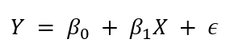
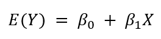

El modelo de regresión lineal simple
Definición
Hay un valor X y un correspondiente valor Y, a la ecuación con que se describe
cómo se relaciona Y con X y en la que se da un término para el error, se le
llama modelo de regresión.
El
siguiente es el modelo que se emplea en la regresión lineal simple.

β0 y β1 se conocen como los parámetros del modelo, y e (la letra griega épsilon) es una variable aleatoria que se conoce como término del error. El término del error da cuenta de la variabilidad de y que no puede ser explicada por la relación lineal entre X y Y.
Modelo de regresión y ecuación de regresión
Cada una de estas distribuciones de valores Y tiene su propia media o valor esperado. A la ecuación que describe la relación entre el valor esperado de Y, que se denota E(x), y X se le llama ecuación de regresión. La siguiente es la ecuación de regresión para la regresión lineal simple.

La gráfica de la ecuación de regresión lineal simple es una línea recta; β0 es la intersección de la recta de regresión con el eje y, β1 es la pendiente y E(y) es la media o valor esperado de y para un valor dado de x
Ejemplo 1.2 (Adaptado de: Anderson & Sweeney, 2008)
Se presentan ejemplos de posibles rectas de regresión.
Regresión lineal positiva
Esta recta de regresión indica que el valor medio de Y está relacionado positivamente con X.

Regresión lineal negativa
Esta recta de regresión indica que el valor medio de Y está relacionado negativamente con X, valores menores de E(Y) corresponden a valores mayores de X.

No hay relacion
Esta recta de regresión muestra el caso en el que el valor medio de Y no está relacionado con X; es decir, el valor medio de Y es el mismo para todos los valores de X.

Proceso en la estimación en la regresión lineal simple